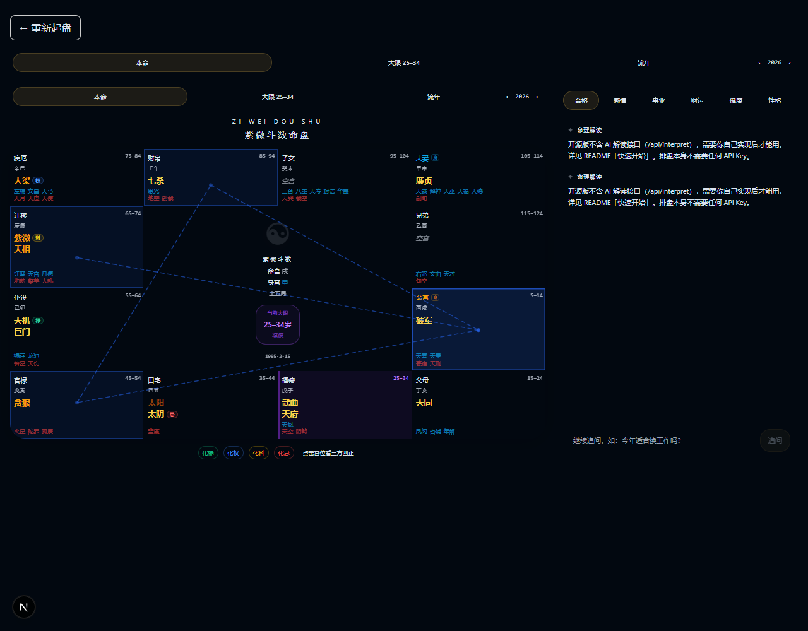
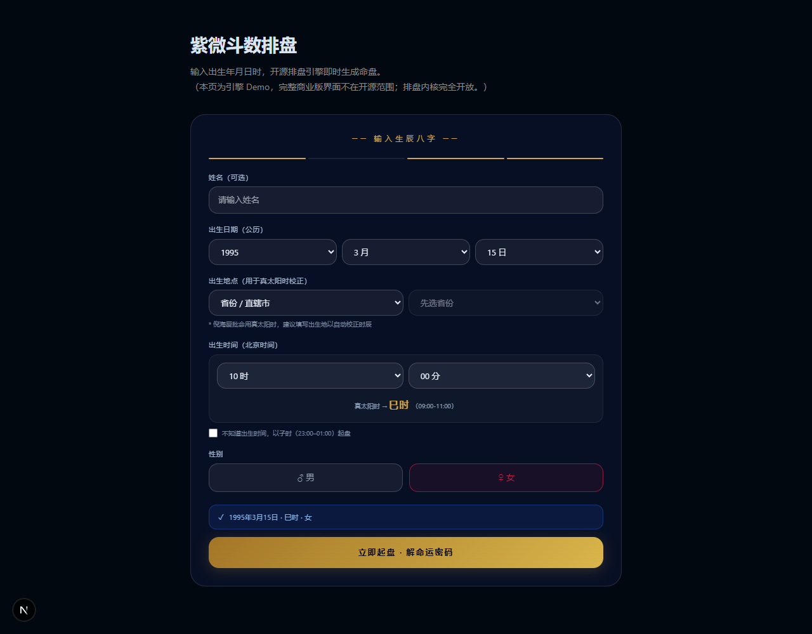
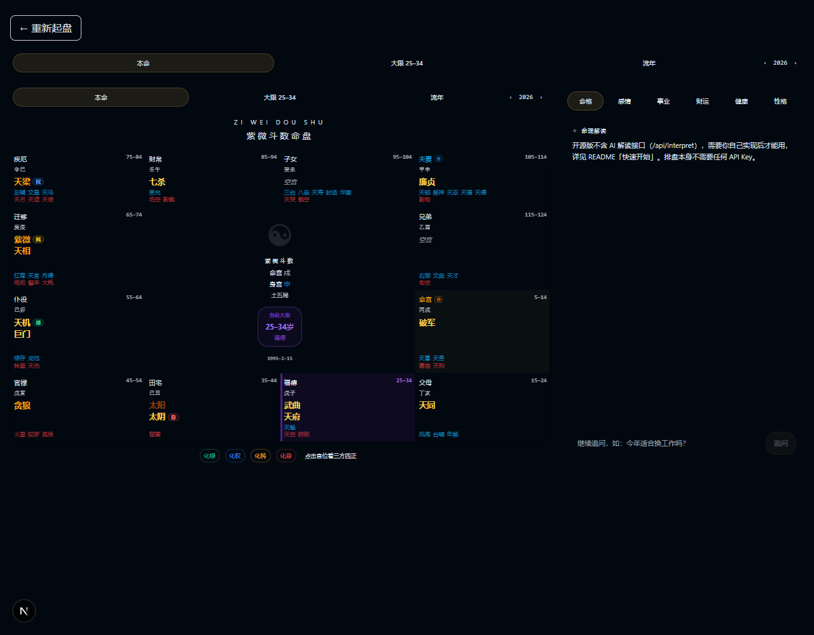
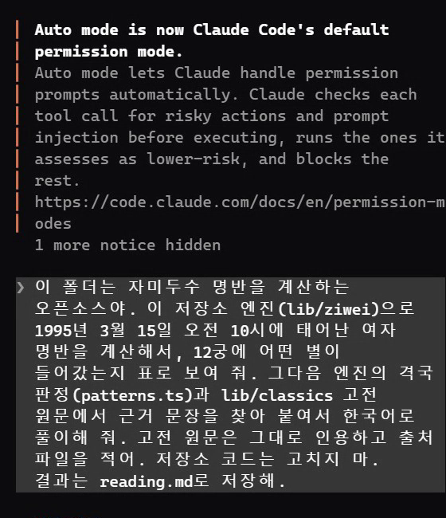
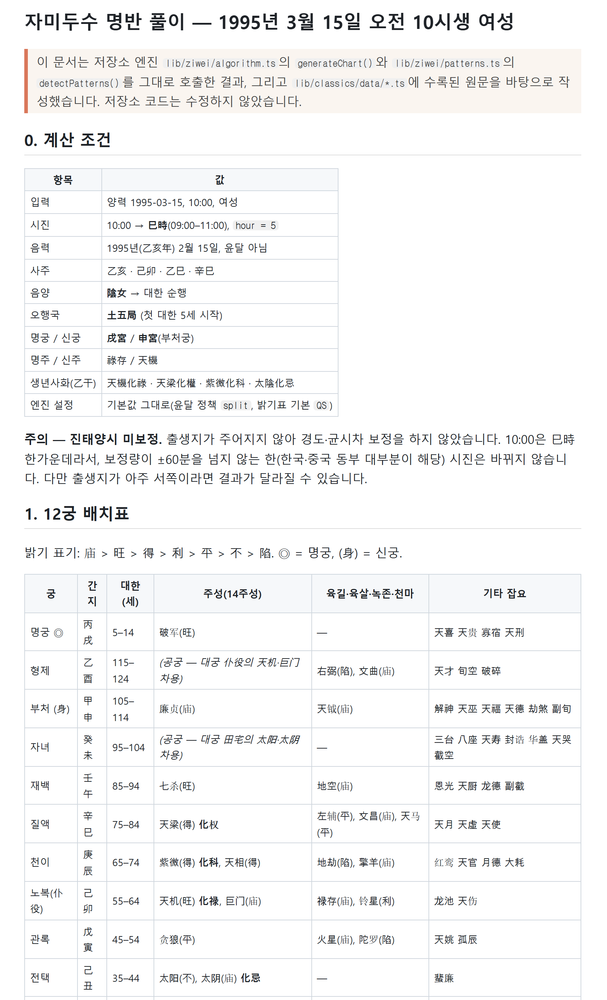
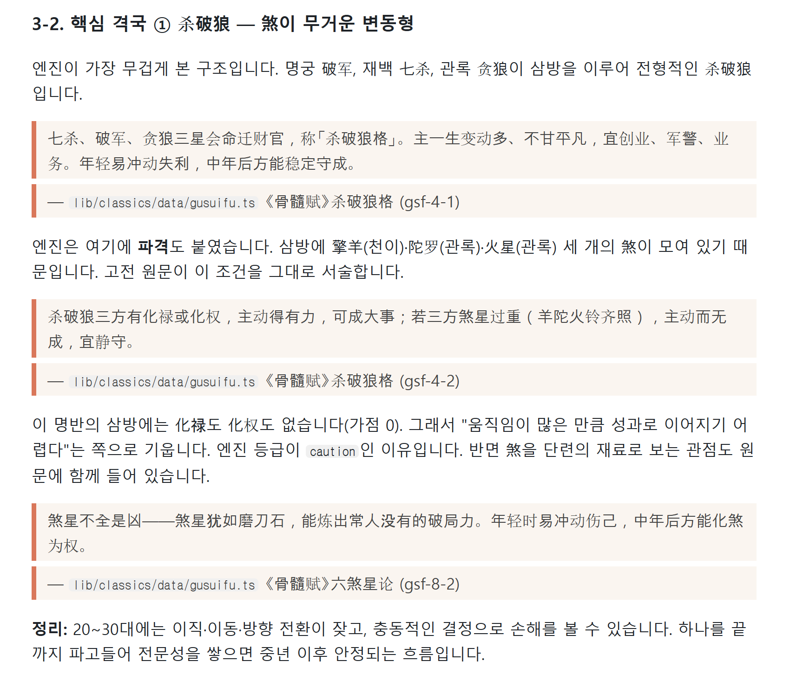

※ 저희가 가상 생일(1995-03-15 오전 10시, 여)로 직접 돌려 본 화면이에요. ziwei-doushu는 생년월일시를 넣으면 자미두수 명반(별 수십 개가 12칸에 놓인 운세판)을 계산해 주는 무료 오픈소스예요(코드 MIT). 계산은 정해진 공식대로 해서, 같은 입력이면 늘 같은 판이 나와요. 다만 공개판엔 AI 풀이 기능이 빠져 있어요. 그래서 폴더째 Claude Code에 열고 풀어 달라고 시키면, 클로드가 이 프로그램으로 계산하고 별 조합(격국)과 저장소에 든 옛 책 구절을 근거로 붙여 한국어 풀이 문서를 만들어요. 화면은 중국어이고, 풀이는 전통 해석이니 재미로 보세요.

터미널에서 '복사해서 쓰기'의 복제 → 설치 명령을 차례로 실행해요. npm install은 저희 PC에서 1분 반쯤 걸렸어요.
npm run dev 를 실행하고 브라우저에서 http://localhost:3000/chart 를 열어요. 입력 칸은 중국어예요: 姓名(이름, 비워도 됨) · 出生日期(생년월일, 양력) 연·월·일 · 出生地点(출생지, 중국 도시 목록 — 비워 두면 보정 없이 넣은 시각 그대로) · 出生时间(태어난 시·분) · 性别(男 남 / 女 여) → 맨 아래 금색 버튼(立即起盘)을 눌러요.


命宫 명궁(나 자신) · 兄弟 형제 · 夫妻 배우자 · 子女 자녀 · 财帛 돈 · 疾厄 건강 · 迁移 바깥 활동·이동 · 仆役 친구·동료 · 官禄 일·직업 · 田宅 집·재산 · 福德 마음·즐거움 · 父母 부모. 칸 안 금색 큰 글자가 주성(14개 중 그 칸에 든 별), 禄·权·科·忌 동그라미가 사화예요. 저장소의 《骨髓赋》 정리본 기준으로 禄은 돈·인연, 权은 힘·결단, 科는 이름·귀인, 忌는 막힘·깊은 숙제를 뜻해요.
내려받은 폴더(ziwei-doushu) 안에서 claude 를 실행하고 '복사해서 쓰기'의 요청 문장을 붙여 넣어요. 생년월일시·성별만 내 것으로 바꾸면 돼요. 클로드가 폴더를 훑어본 뒤 계산 스크립트를 직접 만들어 돌리고(코드는 안 고침), 격국 판정과 옛 책 구절을 찾아 reading.md 로 저장해요. 저희가 돌렸을 땐 요청 한 번, 고쳐 시킨 것 없이 3분 38초가 걸렸고, 같은 요청을 다시 돌렸을 땐 7분 3초가 걸렸어요.

순서대로 ① 계산 조건(음력 날짜·사주 여덟 글자·명궁 자리) ② 12궁 배치표 ③ 엔진이 찾은 격국과 성립 조건 ④ 칸별 풀이 — 인용 줄마다 어느 파일·어느 단락(예: gsf-4-1)에서 왔는지 적혀 있어요 ⑤ 10년 단위 흐름(대한) ⑥ 총평. 인용이 정말 데이터에 있는지도 클로드가 스스로 대조했어요.


요청 문장의 날짜·시각·성별만 바꿔 다시 보내면 돼요. 결과 파일 이름도 바꾸면(예: reading-엄마.md) 앞 결과가 남아요.
쓰기 좋은 때: 자미두수가 궁금한데 명반부터 정확히 뽑아 보고 싶을 때, 풀이에 어느 책 어느 구절이 근거인지 같이 보고 싶을 때. 안 맞는 때: 중요한 결정을 맡기고 싶을 때(전통 해석일 뿐이에요), 태어난 시각을 모를 때(시각이 2시간 단위로 판을 바꿔요), 터미널이 낯설고 Claude Code가 없을 때.
가상 인물 1995년 3월 15일 오전 10시생 여자 → 10시는 巳시(9~11시) → 엔진 계산: 음력 1995년 2월 15일(乙亥년), 명궁은 戌 칸의 破军, 별 70개 배치 → 엔진이 찾은 격국 3개: 杀破狼·火贪格·日月同宫(각각 어느 책에 나오는지 표시) → 클로드 풀이: 칸마다 별 설명 + 《骨髓赋》《全集》《全书》 정리본 구절 인용 + 총평 → reading.md 17KB. 12칸 배치는 저희가 엔진으로 따로 계산한 값과 모두 같았어요.
터미널에서
git clone https://github.com/Renhuai123/ziwei-doushu.git
복제한 폴더에서
cd ziwei-doushu && npm install
같은 폴더에서 → 브라우저 localhost:3000/chart
npm run dev
같은 폴더에서
claude
Claude Code에 붙여 넣기(날짜·시각·성별만 바꾸기)
이 폴더는 자미두수 명반을 계산하는 오픈소스야. 이 저장소 엔진(lib/ziwei)으로 1995년 3월 15일 오전 10시에 태어난 여자 명반을 계산해서, 12궁에 어떤 별이 들어갔는지 표로 보여 줘. 그다음 엔진의 격국 판정(patterns.ts)과 lib/classics 고전 원문에서 근거 문장을 찾아 붙여서 한국어로 풀이해 줘. 고전 원문은 그대로 인용하고 출처 파일을 적어. 저장소 코드는 고치지 마. 결과는 reading.md로 저장해.
도움이 되셨다면
@ai.antenna.kr
에서 바로 쓰는 AI 활용법을 계속 올립니다.